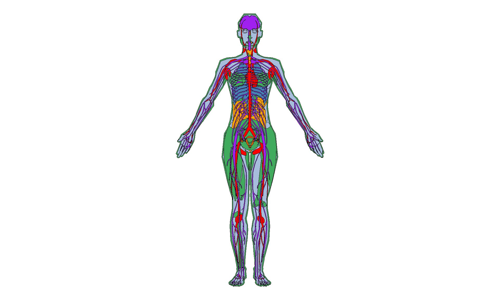
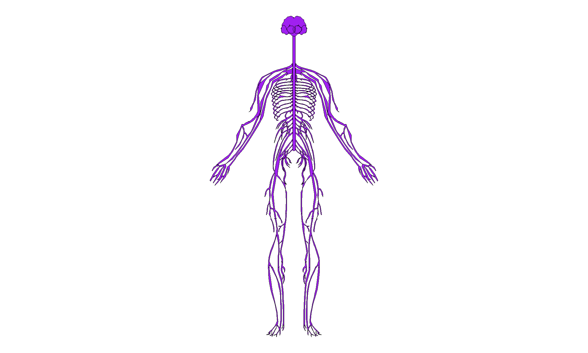
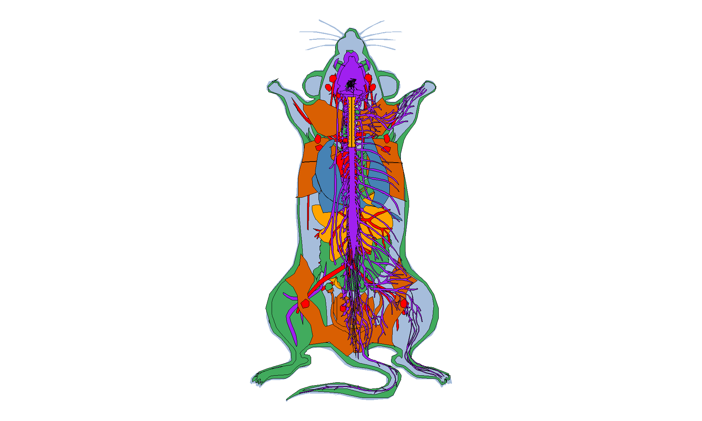
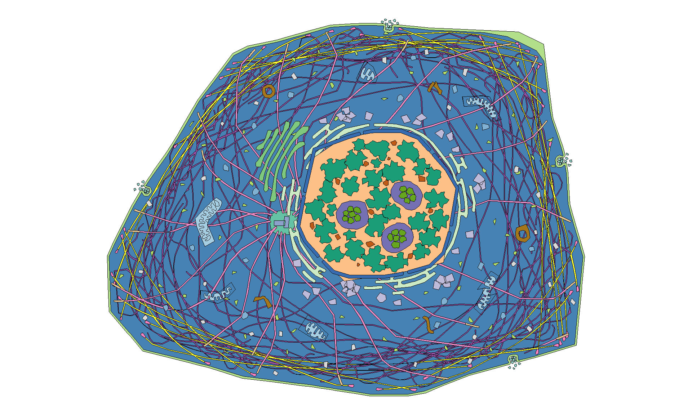

Data Fundamentals in R (OCN 682)
Iterative Coding
UH Fall 2026
2026-10-27
Iterative Coding
Working with iterative data
- Quiz!
- Final Project Review
- for loops
- map functions from purrr (more cat puns!)

Final Project Review
- Read the instructions very carefully.
- Your final project needs to be in a brand new, stand-alone repository within the OCN 682 GitHub Organization (where all our repos are now).
- Your completed repo is due at 1pm on 12/8, regardless of when you present. NO changes will be allowed after class has started so that it is fair to everyone.
- Sign up for a presentation time here.
Set up your script
for loops
for loops
for loops are one way to run an iterative process (do something over and over again). With the tidyverse you can avoid loops for almost any basic coding need. Where they come in handy is in population modeling and Bayesian modeling, for example. They are also integral to programming and happen “under the hood” whether you use them or not.
for loops
For loops have two major parts: an indexing statement and a command (or set of commands) to repeat. The coding is in base R.
The command looks like this:

Simple for loop
Let’s ask R to print a statement telling us what year it is along a sequence of years.
Start with the simple code for one year:
Simple for loop
What we just did printed something over and over, but did not save it anywhere. To save a new vector with all the years, we need to pre-allocate space and tell R where it is going to be saved.
Create an empty dataframe called year_data with columns for year and year_name.
Why pre-allocate?
You could start with an empty vector and grow it with c() each time through the loop. But every time a vector grows, R has to copy the whole thing into a new, bigger spot in memory. Pre-allocating creates the full-size container once, and the loop just fills in the slots. This is an example with 10000 iterations
Growing with c()
user system elapsed
5.68 1.17 7.03 Pre-allocated
user system elapsed
0 0 0 Same answer, very different speed
Both functions return the same vector. Look at the elapsed time: growing gets dramatically slower as n gets bigger, because each step copies more data.
Simple for loop
Add the for loop, one line at a time. First add the column that will hold all the names. Notice the index i in the column name. The index goes along seq_along(years), which is 1:7 here. Using seq_along() lets you change the number of years without changing the loop.
Use seq_along(), not 1:length()
You will often see 1:length(x). If x is empty, 1:length(x) is 1:0, so the loop runs twice (on 1, then 0) instead of not at all. seq_along() returns an empty sequence and the loop correctly does nothing.
Simple for loop
Fill in the year column too:
# A tibble: 7 × 2
year year_name
<int> <chr>
1 2015 The year is 2015
2 2016 The year is 2016
3 2017 The year is 2017
4 2018 The year is 2018
5 2019 The year is 2019
6 2020 The year is 2020
7 2021 The year is 2021Using loops to read in multiple .csv files
Let’s say you have multiple data files and want to perform the same action on each. You can use a for loop to do this.
In the data folder you will see a subfolder called cond_data. It has 3 files of salinity and temperature data collected from Mo’orea during a spatial survey.
Read in one of the files so you can see what it looks like:
Rows: 1,474
Columns: 3
$ date <dttm> 2021-01-15 08:24:40, 2021-01-15 08:24:50, 2021-01-15 08:2…
$ Temperature <dbl> 23.28, 23.28, 23.28, 23.28, 23.28, 23.27, 23.28, 23.28, 23…
$ Salinity <dbl> 34.83656, 34.59268, 34.90039, 34.72214, 34.53604, 34.42168…List files in a directory
[1] "011521_CT316_1pcal.csv" "011621_CT316_1pcal.csv" "011721_CT354_1pcal.csv"Pre-allocate space for the loop
Let’s calculate the mean temperature and salinity from each file and save it.
Write the basic code first
Write the code for one file, test it, then build it out.
# A tibble: 6 × 3
date Temperature Salinity
<dttm> <dbl> <dbl>
1 2021-01-15 08:24:40 23.3 34.8
2 2021-01-15 08:24:50 23.3 34.6
3 2021-01-15 08:25:00 23.3 34.9
4 2021-01-15 08:25:10 23.3 34.7
5 2021-01-15 08:25:20 23.3 34.5
6 2021-01-15 08:25:30 23.3 34.4[1] 29.19296Turn it into a for loop
Add in the loop over the raw data:
Rows: 1,474
Columns: 3
$ date <dttm> 2021-01-15 08:24:40, 2021-01-15 08:24:50, 2021-01-15 08:2…
$ Temperature <dbl> 23.28, 23.28, 23.28, 23.28, 23.28, 23.27, 23.28, 23.28, 23…
$ Salinity <dbl> 34.83656, 34.59268, 34.90039, 34.72214, 34.53604, 34.42168…Rows: 874
Columns: 3
$ date <dttm> 2021-01-16 08:16:00, 2021-01-16 08:16:10, 2021-01-16 08:1…
$ Temperature <dbl> 23.59, 23.60, 23.61, 23.60, 23.60, 23.59, 23.59, 23.59, 23…
$ Salinity <dbl> 34.04744, 33.96974, 33.93468, 33.91809, 33.87572, 33.85311…Rows: 1,004
Columns: 3
$ date <dttm> 2021-01-17 08:20:00, 2021-01-17 08:20:10, 2021-01-17 08:2…
$ Temperature <dbl> 23.73000, 23.72900, 23.73000, 23.73000, 23.73000, 23.73000…
$ Salinity <dbl> NA, NA, NA, NA, NA, NA, NA, 33.48506, 33.47455, 33.45649, …Add in the columns
First, add the filename for each row:
Add in means
# A tibble: 3 × 3
filename mean_temp mean_sal
<chr> <dbl> <dbl>
1 011521_CT316_1pcal.csv 29.2 33.7
2 011621_CT316_1pcal.csv 29.7 33.3
3 011721_CT354_1pcal.csv 29.2 33.0purrr
{purrr}
Now I will teach you to do the exact same thing, but with tidyverse style language.
“purrr enhances R’s functional programming (FP) toolkit by providing a complete and consistent set of tools for working with functions and vectors. If you’ve never heard of FP before, the best place to start is the family of map() functions which allow you to replace many for loops with code that is both more succinct and easier to read. The best place to learn about the map() functions is the iteration chapter in R for data science.”
“…it’s designed to make your pure functions purrr.” - Hadley Wickham
map functions
The pattern of looping over a vector, doing something to each element and saving the results is so common that purrr provides a family of functions to do it for you. There is one function for each type of output:
- map() makes a list
- map_lgl() makes a logical vector
- map_int() makes an integer vector
- map_dbl() makes a double vector
- map_chr() makes a character vector
- map() + list_rbind() makes a dataframe

Each function takes a vector as input, applies a function to each piece, and returns a new vector that is the same length (and has the same names) as the input. Source: R4DS
Simple example
There are 3 ways to do the same thing in a map() function.
Option 1: use a canned function that already exists
Let’s calculate the mean of a set of random numbers, 10 times.
set.seed()
Random numbers differ every time you run the code. set.seed(3817) makes it so everyone gets the same numbers.
Create a vector from 1:10:
Simple example
For each value in 1:10, make a vector of 15 random numbers from a normal distribution:
[[1]]
[1] -0.2811140 3.3026878 0.7806602 1.1182575 0.3920197 1.8008606
[7] 1.5747969 0.4165421 1.1436099 -0.5820410 2.1527642 1.2178257
[13] 1.9824715 0.1121312 0.6630188
[[2]]
[1] 1.790964 1.752404 1.146494 2.250642 1.912510 1.031137 2.358140 2.301029
[9] 1.663202 1.703845 1.031336 2.057487 1.372773 1.501294 1.857160
[[3]]
[1] 3.373183 2.382692 2.663141 1.974031 3.047916 2.685092 1.927869 2.221756
[9] 2.948700 3.322760 2.951348 3.510733 2.645357 2.188357 2.850945
[[4]]
[1] 4.185744 4.412304 4.118739 4.524398 3.819603 4.419107 3.789404 4.117884
[9] 4.934731 2.639063 4.737535 2.309014 5.546460 1.857385 5.842732
[[5]]
[1] 6.149294 4.210193 6.220988 3.799856 3.599600 2.835520 3.976668 3.042930
[9] 4.635346 5.754034 3.774632 4.889661 5.425147 2.736850 3.943166
[[6]]
[1] 5.851735 7.975658 4.993534 5.378910 6.048428 6.373183 4.500829 6.709030
[9] 4.561438 6.357643 5.975450 6.047356 5.297261 6.968007 6.465868
[[7]]
[1] 5.421379 6.950710 6.767740 7.106873 6.864925 6.505722 6.669552 6.003238
[9] 4.738307 5.530395 5.089851 6.409695 8.766241 4.709271 6.361898
[[8]]
[1] 8.786610 7.037692 7.390729 8.543809 9.345673 7.244117 8.738750 7.098755
[9] 6.948610 7.525157 9.269297 9.208602 7.319363 7.283384 8.786233
[[9]]
[1] 9.083908 9.743141 9.589893 9.408701 9.739119 7.812190 6.994335 8.301069
[9] 8.488617 9.266499 7.498386 7.701917 8.841517 8.740765 8.985534
[[10]]
[1] 7.072031 10.910453 10.910953 10.742443 9.467140 10.860376 9.218755
[8] 8.957091 9.640858 10.814472 10.198047 9.289913 10.637883 10.028099
[15] 8.802884Simple example
Calculate the mean of each list element:
Same thing, different notation…
Option 2: make your own function
[1] 1.052966 1.715361 2.712925 4.083607 4.332926 5.966955 6.259720 8.035119
[9] 8.679706 9.836760Option 3: use a formula
Use a formula when you want to change the arguments within the function.
[1] 1.052966 1.715361 2.712925 4.083607 4.332926 5.966955 6.259720 8.035119
[9] 8.679706 9.836760Because we used the same seed, all three notations give identical results.
Bring in files using purrr instead of a for loop
Reminder: find the files.
[1] "011521_CT316_1pcal.csv" "011621_CT316_1pcal.csv" "011721_CT354_1pcal.csv"Or get the full file names in one less step:
[1] "C:/Users/nyssa/Desktop/Repositories/Fall_2026/Week_13/data/cond_data/011521_CT316_1pcal.csv"
[2] "C:/Users/nyssa/Desktop/Repositories/Fall_2026/Week_13/data/cond_data/011621_CT316_1pcal.csv"
[3] "C:/Users/nyssa/Desktop/Repositories/Fall_2026/Week_13/data/cond_data/011721_CT354_1pcal.csv"Read in the files
Read in the files using map() instead of a for loop, then stack the list of dataframes into one with list_rbind(), keeping the filename as a column.
# A tibble: 3,352 × 4
filename date Temperature Salinity
<chr> <dttm> <dbl> <dbl>
1 C:/Users/nyssa/Desktop/Repositories… 2021-01-15 08:24:40 23.3 34.8
2 C:/Users/nyssa/Desktop/Repositories… 2021-01-15 08:24:50 23.3 34.6
3 C:/Users/nyssa/Desktop/Repositories… 2021-01-15 08:25:00 23.3 34.9
4 C:/Users/nyssa/Desktop/Repositories… 2021-01-15 08:25:10 23.3 34.7
5 C:/Users/nyssa/Desktop/Repositories… 2021-01-15 08:25:20 23.3 34.5
6 C:/Users/nyssa/Desktop/Repositories… 2021-01-15 08:25:30 23.3 34.4
7 C:/Users/nyssa/Desktop/Repositories… 2021-01-15 08:25:40 23.3 34.3
8 C:/Users/nyssa/Desktop/Repositories… 2021-01-15 08:25:50 23.3 34.3
9 C:/Users/nyssa/Desktop/Repositories… 2021-01-15 08:26:00 23.3 34.2
10 C:/Users/nyssa/Desktop/Repositories… 2021-01-15 08:26:10 23.3 34.1
# ℹ 3,342 more rowsWhat about map_df()?
You may see map_df() in older code. It still works, but it is superseded as of purrr 1.0. Use map() + list_rbind() instead.
Calculate means
Now we have a regular dataframe and can calculate means the way we already know how: group_by() filename and summarise().
# A tibble: 3 × 3
filename mean_temp mean_sal
<chr> <dbl> <dbl>
1 C:/Users/nyssa/Desktop/Repositories/Fall_2026/Week_13/data… 29.2 33.7
2 C:/Users/nyssa/Desktop/Repositories/Fall_2026/Week_13/data… 29.7 33.3
3 C:/Users/nyssa/Desktop/Repositories/Fall_2026/Week_13/data… 29.2 33.0Shortcut: readr can read many files at once
For the specific task of reading files, you don’t even need a loop or map(). Since readr 2.0, read_csv() accepts a vector of file paths and stacks them for you. The id argument adds a column with the file path.
# A tibble: 3 × 3
filename mean_temp mean_sal
<chr> <dbl> <dbl>
1 C:/Users/nyssa/Desktop/Repositories/Fall_2026/Week_13/data… 29.2 33.7
2 C:/Users/nyssa/Desktop/Repositories/Fall_2026/Week_13/data… 29.7 33.3
3 C:/Users/nyssa/Desktop/Repositories/Fall_2026/Week_13/data… 29.2 33.0Only works when files share the same columns
read_csv(files) expects every file to have the same column names and types. If they differ, or you need to clean each file before combining, use a for loop or map().
Other uses
Maps and loops are awesome for more complicated processes too. For example, you can make a plot from each file and save it automatically.
Other uses: a plot for every file (purrr)
When you want a function’s side effect (saving a file, printing) rather than a returned value, use walk() instead of map().
file_names <- dir(path = CondPath, pattern = ".csv") # just the file names
save_temp_plot <- function(file_name) {
site_name <- str_remove(file_name, "\\.csv")
p <- read_csv(paste0(CondPath, "/", file_name)) |>
ggplot(aes(x = date, y = Temperature)) +
geom_line() +
labs(title = site_name, x = "Date", y = "Temperature (°C)")
ggsave(here("Week_13", "output", paste0(site_name, "_temp.png")),
plot = p, width = 6, height = 4)
}
walk(file_names, save_temp_plot)Write the function once, test it on one file
Run save_temp_plot(file_names[1]) first. Once it works for one file, walk() applies it to all of them.
Other uses: a plot for every file (for loop)
file_names <- dir(path = CondPath, pattern = ".csv") # just the file names
for (i in seq_along(file_names)) {
raw_data <- read_csv(paste0(CondPath, "/", file_names[i]))
site_name <- str_remove(file_names[i], "\\.csv") # drop ".csv" for the title
p <- ggplot(raw_data, aes(x = date, y = Temperature)) +
geom_line() +
labs(title = site_name, x = "Date", y = "Temperature (°C)")
ggsave(here("Week_13", "output", paste0(site_name, "_temp.png")),
plot = p, width = 6, height = 4)
}Learn more
Read these chapters in R4DS and Advanced R to see all the fancy shortcuts you can do with the purrr package.
Homework
You have a set of 4 .csv files in data/homework. Each file is a timeseries of temperature and light data collected in tide pools in Oregon by Jenn Fields. Bring in all 4 files and calculate the mean and standard deviation of both temperature (Temp.C) and light (Intensity.lux) for each tide pool.
Use both approaches
Use both a for loop and map() functions in your script (basically, do it twice). Due Tuesday at 1pm.
Homework: Data Dictionary
| Variable Name | Description |
|---|---|
| PoolID | ID of the pool |
| Foundation_spp | Surfgrass or mussel dominated pool |
| Removal_Control | Was it a removal or control treatment |
| Date.Time | Date and time |
| Temp.C | Temperature in degrees C |
| Intensity.lux | Light level in lux |
| LoggerDepth | Depth of the logger in meters |
Totally awesome R package
Use R for anatomy!!
gganatogram

gganatogram
Just the nervous system!

gganatogram
A mouse!!

gganatogram
A cell!!!

Class Evaluations
Please take 10 minutes to do this now: Link Here
These evals matter
Class evals are really important to both me and the department.
Intro modeling lecture
I uploaded the lecture on intro modeling as an online class so you have it before your independent project is due. There is no homework associated with it, but it will be on your quiz and is super useful to prep you for statistics.
Thanks!
Slides created via Quarto
Many slides modified from R4DS and Advanced R
OCN 682 | Week 13 | Iterative Coding